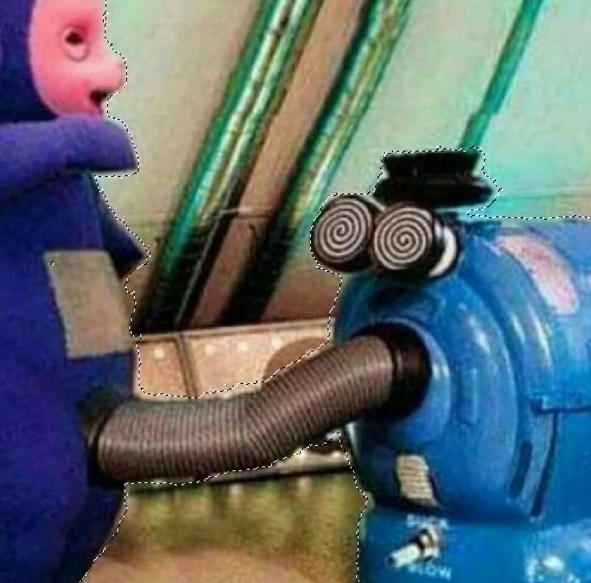
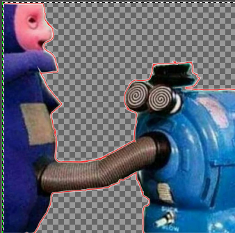

- Install & open Gimp
- Open Image->Hover over Image tab->Click Scale Image
- Choose the measurement for your Image->Click Scale once done


Computer graphics is sub-divided into two categories:
>Raster images deal with pixels on the screen. It is used mainly for rendering images (e.g. Photographs).
>Images are represented by “dots” or “pixels” in a
set resolution (number of dots/pixels per inch).
>Raster images are characterised by becoming fuzzy as you zoom/enlarge the image.
As the image is represented by dots, as you enlarge the image the dots become bigger.
>Raster images are mainly used for photographs and image representation.
>Important resoultions (measured as dpi (dots per inch)),
the higher the amount of memory required to stor the image.
-72 dpi Applie/Mac screen resolution
-96 dpi Windows screen resolution
-300 dpi min Printer resolution
>Software
-GIMP
-Adobe Photoshop
-MS Paint
>Common raster file formats
-jpg, jpeg Joint Photographic Experts Group
-png Portable Network Grphics
>Vector images use mathematical functions or algorithms to display images on the screen.
e.g. a line is represented by two points and an equation to draw the line between points.
>Vector images are characterised by clean lines/edges and the ability to zoom in/out as much as
you want without distortion, as each image is “drawn” using an algorithm.
>Vector images are great for logos, signs, fancy text and design files.
>As such, you require specific software to handle each image type,
and some are proprietary, though some standards exist.
>Software
-Inkscape
-Adobe Illustrator
>Common vector file formats
-dxf AutoCAD Drawing Exchange Format
-svg Scalable Vector Graphics
-STEP STEP. ISO 10303 for 3D Objects
|
|
|


 |
Fusion 360 is an Integrated CAD, CAM, and CAE software. You can consolidate your product development process.
Unify design, engineering, electronics, and manufacturing into a single platform.
As it is from the AutoDesk family, you will find the command structure similar to AutoCAD or Inventor.
With the rate of uptake and the direction provided by AutoDesk,
Fusion 360 will slowly replace the other AutoDesk software.
Fusion 360 is provided free for educational use, provided you sign up (using your email) as a registered student of Singapore Polytechnic.
Fusion 360 is easy to learn and master with lots of online tutorials, Youtube videos and references even from Autodesk itself.
We will use Fusion 360 for most of our design work in this module.
1. Upload a canvas->Resize to your dimensions |


|
4. Extrude the sketch to the thickness you want |
  |
| 6. Draw a 2-point circle 2-3mm bigger than the original middle circle-> Extrude away from your body->Bottom cover 7. Offset plane till above your body->Create Sketch ->Repeat step 6->Top cover:) |


|
| 8. Trace the weights->Extrude the separate rings, making sure the inner/outer rings are bigger than the middle ring to mimic a real weight 9. Join the parts to form 1 body->New component ->Copy & Move to the other holes 10. Enjoy :) |

 
|
Here's my finished product: Fidget Spinner
Had to scale mine down :(
Build your own personalised nametag keychain
Here's mine for reference: Keychain
|
1. Get a Canvas |


|
|
4. Trace the profile |

|
End Product: Knight Piece